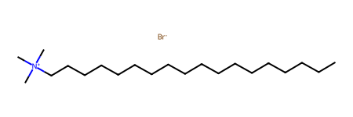
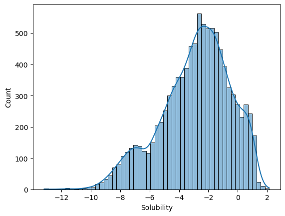
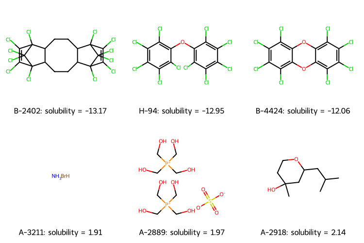
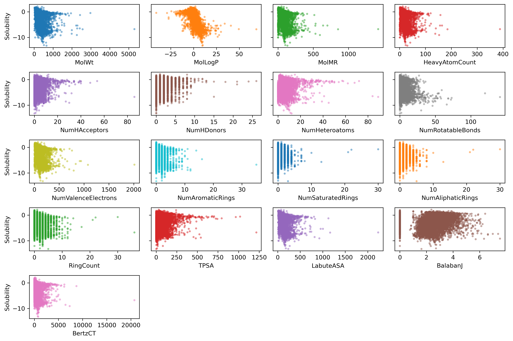
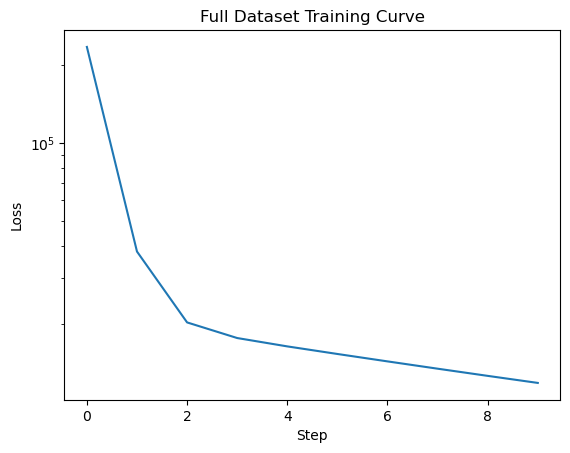
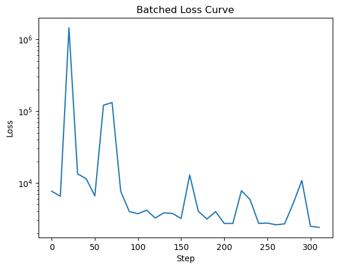
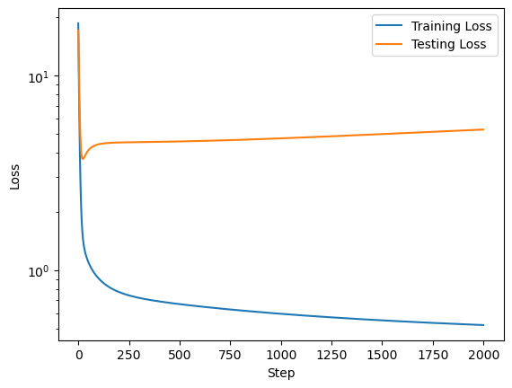
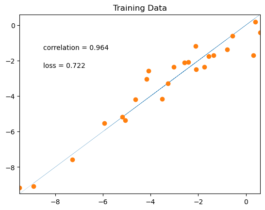
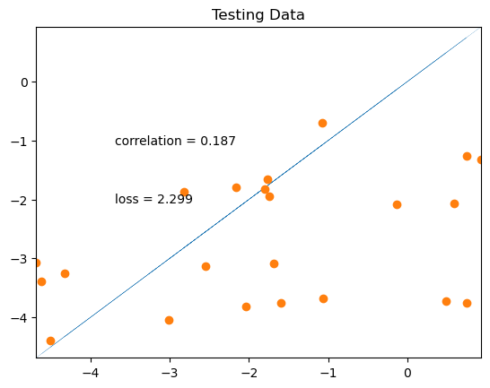

Load data#
import pandas as pd
from rdkit import Chem
from rdkit.Chem import Descriptors
from rdkit.Chem import AllChem
import seaborn as sns
import matplotlib.pyplot as plt
import jax
import jax.numpy as jnp
# soldata = pd.read_csv('https://dataverse.harvard.edu/api/access/datafile/3407241?format=original&gbrecs=true')
# had to rehost because dataverse isn't reliable
soldata = pd.read_csv(
"https://github.com/whitead/dmol-book/raw/main/data/curated-solubility-dataset.csv"
)
soldata.head()
---------------------------------------------------------------------------
KeyboardInterrupt Traceback (most recent call last)
Cell In[2], line 3
1 # soldata = pd.read_csv('https://dataverse.harvard.edu/api/access/datafile/3407241?format=original&gbrecs=true')
2 # had to rehost because dataverse isn't reliable
----> 3 soldata = pd.read_csv(
4 "https://github.com/whitead/dmol-book/raw/main/data/curated-solubility-dataset.csv"
5 )
6 soldata.head()
File ~/miniforge3/envs/jupyterbook/lib/python3.10/site-packages/pandas/io/parsers/readers.py:1026, in read_csv(filepath_or_buffer, sep, delimiter, header, names, index_col, usecols, dtype, engine, converters, true_values, false_values, skipinitialspace, skiprows, skipfooter, nrows, na_values, keep_default_na, na_filter, verbose, skip_blank_lines, parse_dates, infer_datetime_format, keep_date_col, date_parser, date_format, dayfirst, cache_dates, iterator, chunksize, compression, thousands, decimal, lineterminator, quotechar, quoting, doublequote, escapechar, comment, encoding, encoding_errors, dialect, on_bad_lines, delim_whitespace, low_memory, memory_map, float_precision, storage_options, dtype_backend)
1013 kwds_defaults = _refine_defaults_read(
1014 dialect,
1015 delimiter,
(...)
1022 dtype_backend=dtype_backend,
1023 )
1024 kwds.update(kwds_defaults)
-> 1026 return _read(filepath_or_buffer, kwds)
File ~/miniforge3/envs/jupyterbook/lib/python3.10/site-packages/pandas/io/parsers/readers.py:620, in _read(filepath_or_buffer, kwds)
617 _validate_names(kwds.get("names", None))
619 # Create the parser.
--> 620 parser = TextFileReader(filepath_or_buffer, **kwds)
622 if chunksize or iterator:
623 return parser
File ~/miniforge3/envs/jupyterbook/lib/python3.10/site-packages/pandas/io/parsers/readers.py:1620, in TextFileReader.__init__(self, f, engine, **kwds)
1617 self.options["has_index_names"] = kwds["has_index_names"]
1619 self.handles: IOHandles | None = None
-> 1620 self._engine = self._make_engine(f, self.engine)
File ~/miniforge3/envs/jupyterbook/lib/python3.10/site-packages/pandas/io/parsers/readers.py:1880, in TextFileReader._make_engine(self, f, engine)
1878 if "b" not in mode:
1879 mode += "b"
-> 1880 self.handles = get_handle(
1881 f,
1882 mode,
1883 encoding=self.options.get("encoding", None),
1884 compression=self.options.get("compression", None),
1885 memory_map=self.options.get("memory_map", False),
1886 is_text=is_text,
1887 errors=self.options.get("encoding_errors", "strict"),
1888 storage_options=self.options.get("storage_options", None),
1889 )
1890 assert self.handles is not None
1891 f = self.handles.handle
File ~/miniforge3/envs/jupyterbook/lib/python3.10/site-packages/pandas/io/common.py:728, in get_handle(path_or_buf, mode, encoding, compression, memory_map, is_text, errors, storage_options)
725 codecs.lookup_error(errors)
727 # open URLs
--> 728 ioargs = _get_filepath_or_buffer(
729 path_or_buf,
730 encoding=encoding,
731 compression=compression,
732 mode=mode,
733 storage_options=storage_options,
734 )
736 handle = ioargs.filepath_or_buffer
737 handles: list[BaseBuffer]
File ~/miniforge3/envs/jupyterbook/lib/python3.10/site-packages/pandas/io/common.py:389, in _get_filepath_or_buffer(filepath_or_buffer, encoding, compression, mode, storage_options)
386 if content_encoding == "gzip":
387 # Override compression based on Content-Encoding header
388 compression = {"method": "gzip"}
--> 389 reader = BytesIO(req.read())
390 return IOArgs(
391 filepath_or_buffer=reader,
392 encoding=encoding,
(...)
395 mode=fsspec_mode,
396 )
398 if is_fsspec_url(filepath_or_buffer):
File ~/miniforge3/envs/jupyterbook/lib/python3.10/http/client.py:482, in HTTPResponse.read(self, amt)
480 else:
481 try:
--> 482 s = self._safe_read(self.length)
483 except IncompleteRead:
484 self._close_conn()
File ~/miniforge3/envs/jupyterbook/lib/python3.10/http/client.py:631, in HTTPResponse._safe_read(self, amt)
624 def _safe_read(self, amt):
625 """Read the number of bytes requested.
626
627 This function should be used when <amt> bytes "should" be present for
628 reading. If the bytes are truly not available (due to EOF), then the
629 IncompleteRead exception can be used to detect the problem.
630 """
--> 631 data = self.fp.read(amt)
632 if len(data) < amt:
633 raise IncompleteRead(data, amt-len(data))
File ~/miniforge3/envs/jupyterbook/lib/python3.10/socket.py:717, in SocketIO.readinto(self, b)
715 while True:
716 try:
--> 717 return self._sock.recv_into(b)
718 except timeout:
719 self._timeout_occurred = True
File ~/miniforge3/envs/jupyterbook/lib/python3.10/ssl.py:1307, in SSLSocket.recv_into(self, buffer, nbytes, flags)
1303 if flags != 0:
1304 raise ValueError(
1305 "non-zero flags not allowed in calls to recv_into() on %s" %
1306 self.__class__)
-> 1307 return self.read(nbytes, buffer)
1308 else:
1309 return super().recv_into(buffer, nbytes, flags)
File ~/miniforge3/envs/jupyterbook/lib/python3.10/ssl.py:1163, in SSLSocket.read(self, len, buffer)
1161 try:
1162 if buffer is not None:
-> 1163 return self._sslobj.read(len, buffer)
1164 else:
1165 return self._sslobj.read(len)
KeyboardInterrupt:
Data Exploration#
# plot one molecule
mol = Chem.MolFromInchi(soldata.InChI[0])
mol

sns.histplot(soldata.Solubility, kde=True)
plt.show()

# get 3 lowest and 3 highest solubilities
soldata_sorted = soldata.sort_values("Solubility")
extremes = pd.concat([soldata_sorted[:3], soldata_sorted[-3:]])
extremes.head()
| ID | Name | InChI | InChIKey | SMILES | Solubility | SD | Ocurrences | Group | MolWt | ... | NumRotatableBonds | NumValenceElectrons | NumAromaticRings | NumSaturatedRings | NumAliphaticRings | RingCount | TPSA | LabuteASA | BalabanJ | BertzCT | |
|---|---|---|---|---|---|---|---|---|---|---|---|---|---|---|---|---|---|---|---|---|---|
| 5528 | B-2402 | dechlorane plus | InChI=1S/C18H12Cl12/c19-9-10(20)15(25)7-3-4-8-... | UGQQAJOWXNCOPY-UHFFFAOYSA-N | ClC1=C(Cl)C2(Cl)C3CCC4C(CCC3C1(Cl)C2(Cl)Cl)C5(... | -13.171900 | 0.00000 | 1 | G1 | 653.730 | ... | 0.0 | 168.0 | 0.0 | 3.0 | 5.0 | 5.0 | 0.00 | 234.174100 | 1.619292e+00 | 782.127616 |
| 9875 | H-94 | Decachlorodiphenyl ether | InChI=1S/C12Cl10O/c13-1-3(15)7(19)11(8(20)4(1)... | CIPFDHFTBYJKQB-UHFFFAOYSA-N | ClC1=C(Cl)C(Cl)=C(OC2=C(Cl)C(Cl)=C(Cl)C(Cl)=C2... | -12.950000 | 0.00000 | 1 | G1 | 514.661 | ... | 2.0 | 124.0 | 2.0 | 0.0 | 0.0 | 2.0 | 9.23 | 180.634705 | 2.712767e+00 | 690.954533 |
| 7058 | B-4424 | 1,2,3,4,6,7,8,9-octachlorodibenzo-p-dioxin | InChI=1S/C12Cl8O2/c13-1-2(14)6(18)10-9(5(1)17)... | FOIBFBMSLDGNHL-UHFFFAOYSA-N | Clc1c(Cl)c(Cl)c2Oc3c(Cl)c(Cl)c(Cl)c(Cl)c3Oc2c1Cl | -12.060500 | 0.36475 | 2 | G3 | 459.754 | ... | 0.0 | 116.0 | 2.0 | 0.0 | 1.0 | 3.0 | 18.46 | 164.135886 | 2.320888e+00 | 697.841798 |
| 1948 | A-3211 | ammonium bromide | InChI=1S/BrH.H3N/h1H;1H3 | SWLVFNYSXGMGBS-UHFFFAOYSA-N | [NH4+].[Br-] | 1.908300 | 0.00000 | 1 | G1 | 97.943 | ... | 0.0 | 16.0 | 0.0 | 0.0 | 0.0 | 0.0 | 36.50 | 24.016930 | 0.000000e+00 | 2.000000 |
| 1755 | A-2889 | bis(tetrakis(hydroxymethyl)phosphanium) sulfate | InChI=1S/2C4H12O4P.H2O4S/c2*5-1-9(2-6,3-7)4-8;... | YIEDHPBKGZGLIK-UHFFFAOYSA-L | OC[P+](CO)(CO)CO.OC[P+](CO)(CO)CO.[O-][S]([O-]... | 1.967513 | 0.00000 | 1 | G1 | 406.283 | ... | 8.0 | 144.0 | 0.0 | 0.0 | 0.0 | 0.0 | 242.10 | 134.460413 | -2.730159e-07 | 293.052636 |
5 rows × 26 columns
# We need to have a list of strings for legends
legend_text = [
f"{x.ID}: solubility = {x.Solubility:.2f}" for x in extremes.itertuples()
]
# now plot them on a grid
extreme_mols = [Chem.MolFromInchi(inchi) for inchi in extremes.InChI]
Chem.Draw.MolsToGridImage(
extreme_mols, molsPerRow=3, subImgSize=(250, 250), legends=legend_text
)

Feature Correlation#
list(soldata.columns)
['ID',
'Name',
'InChI',
'InChIKey',
'SMILES',
'Solubility',
'SD',
'Ocurrences',
'Group',
'MolWt',
'MolLogP',
'MolMR',
'HeavyAtomCount',
'NumHAcceptors',
'NumHDonors',
'NumHeteroatoms',
'NumRotatableBonds',
'NumValenceElectrons',
'NumAromaticRings',
'NumSaturatedRings',
'NumAliphaticRings',
'RingCount',
'TPSA',
'LabuteASA',
'BalabanJ',
'BertzCT']
features_start_at = list(soldata.columns).index("MolWt")
feature_names = soldata.columns[features_start_at:]
fig, axs = plt.subplots(nrows=5, ncols=4, sharey=True, figsize=(12, 8), dpi=300)
axs = axs.flatten() # so we don't have to slice by row and column
for i, n in enumerate(feature_names):
ax = axs[i]
ax.scatter(
soldata[n], soldata.Solubility, s=6, alpha=0.4, color=f"C{i}"
) # add some color
if i % 4 == 0:
ax.set_ylabel("Solubility")
ax.set_xlabel(n)
# hide empty subplots
for i in range(len(feature_names), len(axs)):
fig.delaxes(axs[i])
plt.tight_layout()
plt.show()

Linear Model#
def linear_model(x, w, b):
return jnp.dot(x, w) + b
# convert data into features, labels
features = soldata.loc[:, feature_names].values
labels = soldata.Solubility.values
feature_dim = features.shape[1]
# initialize our paramaters
w = np.random.normal(size=feature_dim)
b = 0.0
# define loss
def loss(y, labels):
return jnp.mean((y - labels) ** 2)
# test it out
y = linear_model(features, w, b)
loss(y, labels)
Array(967693.56, dtype=float32)
# compute gradients
def loss_wrapper(w, b, data):
features = data[0]
labels = data[1]
y = linear_model(features, w, b)
return loss(y, labels)
loss_grad = jax.grad(loss_wrapper, (0, 1))
# test it out
loss_grad(w, b, (features, labels))
(Array([9.4014200e+05, 5.8491772e+03, 2.3424061e+05, 6.2655258e+04,
1.3442192e+04, 3.3321855e+03, 1.9216250e+04, 1.3148349e+04,
3.2818919e+05, 4.8551802e+03, 8.0626337e+02, 1.5055696e+03,
6.3607407e+03, 2.2716892e+05, 3.9039288e+05, 4.0522227e+03,
2.2980655e+06], dtype=float32),
Array(2070.362, dtype=float32, weak_type=True))
loss_progress = []
eta = 1e-6
data = (features, labels)
for i in range(10):
grad = loss_grad(w, b, data)
w -= eta * grad[0]
b -= eta * grad[1]
loss_progress.append(loss_wrapper(w, b, data))
plt.plot(loss_progress)
plt.xlabel("Step")
plt.yscale("log")
plt.ylabel("Loss")
plt.title("Full Dataset Training Curve")
plt.show()

# initialize our paramaters
# to be fair to previous method
w = np.random.normal(size=feature_dim)
b = 0.0
loss_progress = []
eta = 1e-6
batch_size = 32
N = len(labels) # number of data points
data = (features, labels)
# compute how much data fits nicely into a batch
# and drop extra data
new_N = len(labels) // batch_size * batch_size
# the -1 means that numpy will compute
# what that dimension should be
batched_features = features[:new_N].reshape((-1, batch_size, feature_dim))
batched_labels = labels[:new_N].reshape((-1, batch_size))
# to make it random, we'll iterate over the batches randomly
indices = np.arange(new_N // batch_size)
np.random.shuffle(indices)
for i in indices:
# choose a random set of
# indices to slice our data
grad = loss_grad(w, b, (batched_features[i], batched_labels[i]))
w -= eta * grad[0]
b -= eta * grad[1]
# we still compute loss on whole dataset, but not every step
if i % 10 == 0:
loss_progress.append(loss_wrapper(w, b, data))
plt.plot(np.arange(len(loss_progress)) * 10, loss_progress)
plt.xlabel("Step")
plt.yscale("log")
plt.ylabel("Loss")
plt.title("Batched Loss Curve")
plt.show()

import pandas as pd
import matplotlib.pyplot as plt
import numpy as np
import jax.numpy as jnp
from jax.example_libraries import optimizers
import jax
import rdkit, rdkit.Chem, rdkit.Chem.Draw
from rdkit.Chem.Scaffolds import MurckoScaffold
import dmol
---------------------------------------------------------------------------
ModuleNotFoundError Traceback (most recent call last)
Cell In[36], line 9
7 import rdkit, rdkit.Chem, rdkit.Chem.Draw
8 from rdkit.Chem.Scaffolds import MurckoScaffold
----> 9 import dmol
ModuleNotFoundError: No module named 'dmol'
# soldata = pd.read_csv('https://dataverse.harvard.edu/api/access/datafile/3407241?format=original&gbrecs=true')
soldata = pd.read_csv(
"https://github.com/whitead/dmol-book/raw/main/data/curated-solubility-dataset.csv"
)
features_start_at = list(soldata.columns).index("MolWt")
feature_names = soldata.columns[features_start_at:]
# Get 50 points and split into train/test
sample = soldata.sample(50, replace=False)
train = sample[:25]
test = sample[25:]
# standardize the features using only train
test[feature_names] -= train[feature_names].mean()
test[feature_names] /= train[feature_names].std()
train[feature_names] -= train[feature_names].mean()
train[feature_names] /= train[feature_names].std()
# convert from pandas dataframe to numpy arrays
x = train[feature_names].values
y = train["Solubility"].values
test_x = test[feature_names].values
test_y = test["Solubility"].values
/var/folders/2y/7k4lmpb96ls_d714_z5n2594bry8kf/T/ipykernel_15652/3815087055.py:7: SettingWithCopyWarning:
A value is trying to be set on a copy of a slice from a DataFrame.
Try using .loc[row_indexer,col_indexer] = value instead
See the caveats in the documentation: https://pandas.pydata.org/pandas-docs/stable/user_guide/indexing.html#returning-a-view-versus-a-copy
test[feature_names] -= train[feature_names].mean()
/var/folders/2y/7k4lmpb96ls_d714_z5n2594bry8kf/T/ipykernel_15652/3815087055.py:8: SettingWithCopyWarning:
A value is trying to be set on a copy of a slice from a DataFrame.
Try using .loc[row_indexer,col_indexer] = value instead
See the caveats in the documentation: https://pandas.pydata.org/pandas-docs/stable/user_guide/indexing.html#returning-a-view-versus-a-copy
test[feature_names] /= train[feature_names].std()
/var/folders/2y/7k4lmpb96ls_d714_z5n2594bry8kf/T/ipykernel_15652/3815087055.py:9: SettingWithCopyWarning:
A value is trying to be set on a copy of a slice from a DataFrame.
Try using .loc[row_indexer,col_indexer] = value instead
See the caveats in the documentation: https://pandas.pydata.org/pandas-docs/stable/user_guide/indexing.html#returning-a-view-versus-a-copy
train[feature_names] -= train[feature_names].mean()
/var/folders/2y/7k4lmpb96ls_d714_z5n2594bry8kf/T/ipykernel_15652/3815087055.py:10: SettingWithCopyWarning:
A value is trying to be set on a copy of a slice from a DataFrame.
Try using .loc[row_indexer,col_indexer] = value instead
See the caveats in the documentation: https://pandas.pydata.org/pandas-docs/stable/user_guide/indexing.html#returning-a-view-versus-a-copy
train[feature_names] /= train[feature_names].std()
# compute gradients
def loss_wrapper(w, b, data):
features = data[0]
labels = data[1]
y = linear_model(features, w, b)
return loss(y, labels)
loss_grad = jax.grad(loss_wrapper, (0, 1))
# test it out
loss_grad(w, b, (features, labels))
(Array([ 4.1502275 , 5.5019665 , 4.173802 , 3.6554039 , 0.37253347,
1.8715537 , 2.3312495 , 4.031696 , 3.562937 , 2.872416 ,
-4.5033555 , -4.2365036 , -1.786111 , 0.5864783 , 3.9264245 ,
2.9124892 , 3.564588 ], dtype=float32),
Array(6.2304683, dtype=float32, weak_type=True))
loss_progress = []
test_loss_progress = []
eta = 0.05
for i in range(2000):
grad = loss_grad(w, b, x, y)
w -= eta * grad[0]
b -= eta * grad[1]
loss_progress.append(loss(w, b, x, y))
test_loss_progress.append(loss(w, b, test_x, test_y))
plt.plot(loss_progress, label="Training Loss")
plt.plot(test_loss_progress, label="Testing Loss")
plt.xlabel("Step")
plt.yscale("log")
plt.legend()
plt.ylabel("Loss")
plt.show()

yhat = x @ w + b
plt.plot(y, y, ":", linewidth=0.2)
plt.plot(y, x @ w + b, "o")
plt.xlim(min(y), max(y))
plt.ylim(min(y), max(y))
plt.text(min(y) + 1, max(y) - 2, f"correlation = {np.corrcoef(y, yhat)[0,1]:.3f}")
plt.text(min(y) + 1, max(y) - 3, f"loss = {np.sqrt(np.mean((y - yhat)**2)):.3f}")
plt.title("Training Data")
plt.show()

yhat = test_x @ w + b
plt.plot(test_y, test_y, ":", linewidth=0.2)
plt.plot(test_y, yhat, "o")
plt.xlim(min(test_y), max(test_y))
plt.ylim(min(test_y), max(test_y))
plt.text(
min(test_y) + 1,
max(test_y) - 2,
f"correlation = {np.corrcoef(test_y, yhat)[0,1]:.3f}",
)
plt.text(
min(test_y) + 1,
max(test_y) - 3,
f"loss = {np.sqrt(np.mean((test_y - yhat)**2)):.3f}",
)
plt.title("Testing Data")
plt.show()

import pandas as pd
import matplotlib.pyplot as plt
import rdkit, rdkit.Chem, rdkit.Chem.Draw
import numpy as np
import jax.numpy as jnp
import mordred, mordred.descriptors
import jax
import dmol
---------------------------------------------------------------------------
ImportError Traceback (most recent call last)
Cell In[4], line 6
4 import numpy as np
5 import jax.numpy as jnp
----> 6 import mordred, mordred.descriptors
7 import jax
8 import dmol
File ~/miniforge3/envs/jupyterbook/lib/python3.10/site-packages/mordred/descriptors/__init__.py:42
38 globals()["__all__"] = tuple(names)
39 globals()["all"] = tuple(values)
---> 42 _import_all_descriptors()
File ~/miniforge3/envs/jupyterbook/lib/python3.10/site-packages/mordred/descriptors/__init__.py:31, in _import_all_descriptors()
28 if name[:1] == "_" or ext != ".py":
29 continue
---> 31 mdl = import_module(".." + name, __package__)
33 if any(v for v in mdl.__dict__.values() if is_descriptor_class(v)):
34 names.append(name)
File ~/miniforge3/envs/jupyterbook/lib/python3.10/importlib/__init__.py:126, in import_module(name, package)
124 break
125 level += 1
--> 126 return _bootstrap._gcd_import(name[level:], package, level)
File ~/miniforge3/envs/jupyterbook/lib/python3.10/site-packages/mordred/MolecularDistanceEdge.py:2
1 from six import string_types, integer_types
----> 2 from numpy import product
4 from ._base import Descriptor
5 from ._graph_matrix import Valence, DistanceMatrix
ImportError: cannot import name 'product' from 'numpy' (/Users/mehdimir/miniforge3/envs/jupyterbook/lib/python3.10/site-packages/numpy/__init__.py)
import sys, numpy as np
print(sys.executable)
print(np.__version__)
/Users/mehdimir/miniforge3/envs/jupyterbook/bin/python
2.2.5